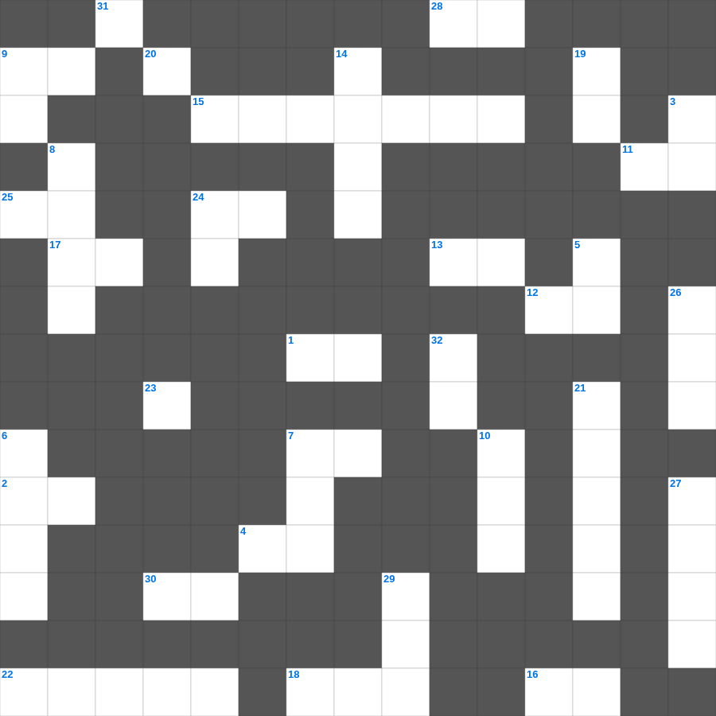

고린도후서 마스터 100 (2/2)
📌 서비스 정의
십자가로세로는 교회 주보와 주일학교에서 사용할 수 있는 성경 기반 가로세로 퍼즐 서비스입니다. 성경 인물, 사건, 핵심 구절을 바탕으로 제작되었습니다. 온라인 풀이 및 인쇄 기능을 제공합니다.
📖 고린도후서란?
고린도후서는 바울이 자신의 사도직과 사역을 변호하며, 고난 속에서도 위로하시는 하나님과 헌금에 대한 가르침을 전하는 개인적이고 감정적인 서신입니다.
📚 고린도후서의 주요 사건·주제
고난 중의 위로에 대한 가르침 · 새 언약의 일꾼으로서의 사역 · 헌금에 대한 권면(고린도후서 8~9장) · 바울의 사도직 변호 · 약함 속의 강함(고린도후서 12장)
고린도후서의 말씀을 퀴즈로 배우는 고린도후서 무료 성경퀴즈입니다. 가로 힌트와 세로 힌트를 보고 35개의 단어를 맞춰보세요. 인쇄도 가능하고 정답 확인도 바로 되니 소그룹 모임이나 가정 예배 시간에도 활용하실 수 있습니다.

📝 가로 힌트
1. 백성들이 길로 인해 불평하다 물린 독을 가진 짐승
2. 베드로후서 3장 3절: 말세에 조롱하는 자들은 무엇을 따라 행하나
4. 사람이 의롭게 되는 것은 율법의 행위로 말미암음이 아니요 오직 예수 그리스도를 이것으로 말미암는 줄 알므로
7. 왕이 침상에 앉았을 때에 나의 이것 기름이 향기를 뿜어냈구나
9. 느부갓네살이 꿈을 꾸고 그 해석을 못 하는 자들을 다 이것하라 명령하였더라
11. 마지막 나팔에 순식간에 홀연히 다 이것하리니
12. 내가 너희에게 꾸준히 일렀으나 너희가 이것 하지 아니하였느니라
13. 너희가 자기를 위하여 공의를 심고 이것을 거두라
15. 믿음의 보고를 한 두 명의 정탐꾼
16. 주여 내가 만민 중에서 주께 감사하오며 뭇 나라 중에서 주를 이것 하리이다
17. 내가 사람의 방언과 천사의 말을 할지라도 이것이 없으면 소리 나는 구리와 울리는 꽹과리가 되고
18. 요엘서에서 재앙의 도구로 쓰인 곤충
22. 예레미야가 썼던 멍에의 상징적 의미
24. 예수께서 세례를 받으시고 곧 물에서 올라오실새 하늘이 열리고 하나님의 이것이 비둘기 같이 내려
25. 주의 장막에 머무를 자 누구오니이까 정직하게 행하며 이것을 실천하는 자
28. 그들은 이것처럼 언약을 어기고 거기에서 나를 반역하였느니라
30. 빌립보서의 마지막 인사: 주 예수 그리스도의 이것이 너희 심령에 있을지어다
31. 에브라임은 뒤집지 않은 이것이로다
📝 세로 힌트
3. 그 안에는 지혜와 지식의 모든 이것이 감추어져 있느니라
5. 바울이 빌립보에서 귀신 들려 점치는 이것을 고쳐주자 주인이 고소함
6. 나병 환자가 부정하다는 것을 알릴 때 외치는 말
7. 다윗이 수금으로 탄주할 때 사울의 병이 이것함
8. 말라기의 이름 뜻
9. 모든 영혼이 다 내게 속한지라... 죄를 범하는 그 영혼은 이것리라
10. 다윗이 죄를 짓고 지은 참회 시 (시편 51편)
14. 오라 우리가 여호와께로 이것 여호와께서 우리를 찢으셨으나 도로 낫게 하실 것이요
19. 예수님이 광야에서 40일간 받으신 것
20. 가나안은 이것과 꿀이 흐르는 땅
21. 나아만 장군이 요단강에 일곱 번 씻음
23. 사무엘하는 사무엘의 죽음 이후의 역사를 기록함 (O/X)
24. 그리스도 예수 안에서 아브라함의 복이 이방인에게 미치게 하고 또 우리로 하여금 믿음으로 말미암아 이것의 약속을 받게 하려 함이라
26. 언약궤가 다윗 성에 들어올 때 다윗의 복장
27. 우리의 유월절 양 곧 이것께서 희생되셨느니라
29. 여호와께서 이미 큰 이것을 예비하사 요나를 삼키게 하셨으므로
32. 너희는 이방인이 그 마음의 이것한 것으로 행함 같이 행하지 말라
🧩 이 퍼즐에서 배우는 내용
이 퍼즐은 고린도후서 마스터 100 (2/2)의 핵심 단어와 개념을 자연스럽게 복습할 수 있도록 구성되었습니다. 주일학교 수업이나 개인 성경공부에서 학습 내용을 점검하는 용도로 바로 활용할 수 있습니다.
🧑🏫 교회 교육 자료 활용
이 퍼즐은 주일학교 교재 추천 자료로 활용할 수 있고, 주일학교 주보에 넣기 좋은 분량으로 구성되어 있습니다. 수업용 주일학교 교안에 활동지로 붙이거나, 예배 후 복습용 주일학교 공과교재로 바로 사용할 수 있습니다.
🏷️ 키워드
고린도후서 무료 성경퀴즈, 고린도후서, 십자가로세로, 성경퀴즈, 말씀퀴즈, 가로세로퍼즐, 주일학교 교재 추천, 주일학교 주보, 주일학교 교안, 주일학교 공과교재